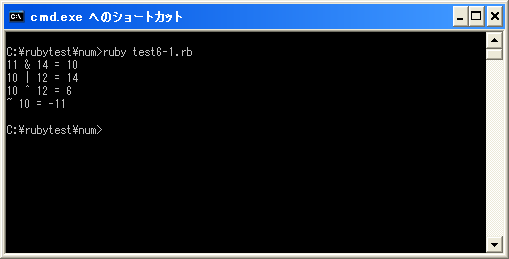

ビット演算子
ビット演算子とは整数に対してビット単位で演算を行うための演算子です。Integerクラス(Fixnumクラス及びBignumクラス)のオブジェクトに対して使われます。ビット演算子には次のものが用意されています。
| 演算子 | 記述例 | 意味 |
|---|---|---|
| & | a & b | ビットAND |
| | | a | b | ビットOR |
| ^ | a ^ b | ビットXOR |
| ~ | ~a | ビット反転 |
| << | a << b | 左シフト |
| >> | a >> b | 右シフト |
ビット演算子の中で左シフトと右シフトはシフト演算子とも呼ばれます。シフト演算子については「シフト演算子」で確認します。ではそれぞれの演算子について確認してみます。
※演算子の優先順位については「演算子の優先順位(関係演算子、論理演算子)」を参照して下さい。
ビットAND
ビットANDは演算子の左辺と右辺の同じ位置にあるビットを比較して、両方のビットが共に「1」の場合だけ「1」にします。
a & b
例として「11」と「14」のビットANDを取ってみます。
1011 = 11 1110 = 14 ------------ 1010 = 10
数値の「11」と「14」をそれぞれ2進数で表します。そして各ビットを比較しますがビットANDの場合は両方の値のビットが「1」になっている場合は「1」を、それ以外は「0」とします。その結果、2進数の「1010」(10進数の「10」)と言う結果を取得することが出来ます。
num1 = 11 num2 = 14 print(num1 & num2)
上記では結果として「10」が出力されます。
ビットOR
ビットORは演算子の左辺と右辺の同じ位置にあるビットを比較して、両方のビットのどちらかが「1」の場合に「1」にします。
a | b
例として「10」と「12」のビットORを取ってみます。
1010 = 10 1100 = 12 ------------ 1110 = 14
数値の「10」と「12」をそれぞれ2進数で表します。そして各ビットを比較しますがビットORの場合はどちらかの値のビットが「1」になっている場合は「1」を、それ以外は「0」とします。その結果、2進数の「1110」(10進数の「14」)と言う結果を取得することが出来ます。
num1 = 10 num2 = 12 print(num1 | num2)
上記では結果として「10」が出力されます。
ビットXOR
ビットXORは演算子の左辺と右辺の同じ位置にあるビットを比較して、ビットの値が異なる場合にだけ「1」にします。
a ^ b
例として「10」と「12」のビットXORを取ってみます。
1010 = 10 1100 = 12 ------------ 0110 = 6
数値の「10」と「12」をそれぞれ2進数で表します。そして各ビットを比較しますがビットXORの場合は2つの値のビットの値が異なっている場合は「1」を、それ以外は「0」とします。その結果、2進数の「0110」(10進数の「6」)と言う結果を取得することが出来ます。
num1 = 10 num2 = 12 print(num1 ^ num2)
上記では結果として「10」が出力されます。
ビット反転
ビット反転は演算子の右辺の値の各ビットに対して「1」の場合は「0」に、「0」の場合は「1」にします。
~ a
例として「10」のビットNOTを取ってみます。
0000000000001010 = 10 ----------------------- 1111111111110101 = -11
対象となる数値の「10」を2進数で表します。そしてビットNOTの場合はビットが「1」の場合は「0」に、ビットが「0」の場合は「1」とします。その結果、2進数の「1111111111110101」(10進数の「-11」)と言う結果を取得することが出来ます。
num1 = 10 print(~num1)
上記では結果として「-11」が出力されます。
サンプルプログラム
では簡単なプログラムで確認して見ます。
#! ruby -Ku
num1 = 11
num2 = 14
print(num1, " & ", num2, " = ", num1 & num2, "¥n")
num1 = 10
num2 = 12
print(num1, " | ", num2, " = ", num1 | num2, "¥n")
print(num1, " ^ ", num2, " = ", num1 ^ num2, "¥n")
print("~ ", num1, " = ", ~num1, "¥n")
上記のプログラムを「test6-1.rb」として保存します。文字コードはUTF-8です。そして下記のように実行して下さい。

( Written by Tatsuo Ikura )

著者 / TATSUO IKURA
初心者～中級者の方を対象としたプログラミング方法や開発環境の構築の解説を行うサイトの運営を行っています。